득근득근 사용 설명서
실제 코드, API, 라우트, 데이터 모델, 실행 화면을 기준으로 작성한 제출용 문서입니다.
득근득근 사용 설명서
1. 문서 목적
이 문서는 득근득근을 처음 사용하는 사람이 실제 화면을 보면서 회원가입, 로그인, 출석 기록, 마이페이지, AI 기능, 커뮤니티, 운동 모임, 관리자 기능을 따라 할 수 있도록 작성한 사용 설명서입니다. 설명은 실제 코드와 실행 화면에 구현된 기능만 기준으로 합니다.
2. 사용 전 준비
| 항목 | 안내 |
|---|---|
| 접속 방법 | 로컬 개발 환경에서는 프론트엔드 실행 후 http://localhost:5173에 접속합니다. |
| 로그인 필요 여부 | 홈, 로그인, 회원가입, 프로그램, 이벤트 공개 화면은 비회원도 접근할 수 있습니다. 출석, 마이페이지, AI, 자랑방, 공동구매, 리뷰, 모임, 친구, 라운지는 로그인이 필요합니다. |
| 회원가입 필요 여부 | 일반 회원 기능을 사용하려면 회원가입 또는 Google 로그인이 필요합니다. |
| 권한별 계정 | 일반 회원은 보호 기능을 사용하고, 관리자는 /admin 이하 화면에 접근합니다. 문서 캡처에는 테스트용 회원 계정과 테스트용 관리자 계정을 사용했으며 비밀번호는 문서에 기재하지 않습니다. |
| 브라우저 | Chrome, Edge 등 최신 Chromium 계열 브라우저 사용을 권장합니다. |
| PC/모바일 | 코드상 반응형 UI가 포함되어 있지만, 이 문서는 제출용 PC 화면 폭 1440px 기준으로 작성했습니다. |
| 테스트 환경 실행 | 백엔드 8080, 프론트엔드 5173, 실시간 서버 4001, MySQL 실행이 필요합니다. |
3. 사용자 역할 안내
| 역할 | 설명 | 주요 기능 |
|---|---|---|
| 비회원 방문자 | 로그인하지 않은 사용자 | 홈 확인, 로그인, 회원가입, 프로그램 소개/신청, 이벤트 확인 |
| 일반 회원 | 가입 후 로그인한 사용자 | 출석 기록, 마이페이지, 캐릭터 성장, AI 분석/상담, 인바디 분석, 자랑방, 공동구매, 리뷰, 모임, 친구/채팅, 라운지 |
| 관리자 | ROLE_ADMIN 권한 사용자 | 관리자 대시보드, 통계 확인, 프로그램 신청 관리, 콘텐츠 관리, 출석 공유 관리, 문의 처리, 이벤트 CMS, 감사 로그 |
4. 일반 사용자 또는 회원 사용 방법
홈 화면 이용
사용 목적:
서비스의 핵심 흐름과 오늘 할 일을 확인합니다.
이동 경로:
브라우저 접속 → 홈 화면
사용 단계:
http://localhost:5173에 접속합니다.- 상단 메뉴에서 커뮤니티, 멤버, 미디어, 이벤트, AI, 내 정보 메뉴를 확인합니다.
- “오늘 출석 시작”을 누르면 출석 체크 화면으로 이동합니다.
- “운동모임 가기”를 누르면 운동 모임 허브로 이동합니다.
화면 설명:
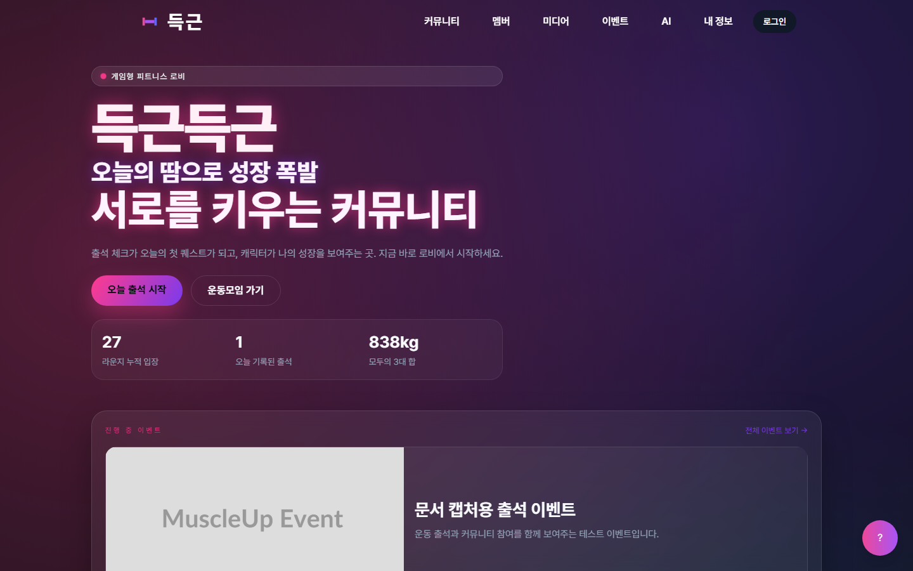
홈 화면은 게임형 피트니스 로비입니다. 누적 라운지 입장, 오늘 기록된 출석, 모두의 3대 합 같은 공개 지표와 진행 중 이벤트가 표시됩니다.
사용 결과:
사용자는 서비스가 출석, 캐릭터 성장, 커뮤니티, 이벤트를 연결하는 구조임을 파악할 수 있습니다.
주의 사항:
로그인하지 않은 상태에서는 출석, 마이페이지 등 보호 기능으로 이동할 때 로그인 화면으로 안내됩니다.
회원가입
사용 목적:
이메일 인증을 거쳐 일반 회원 계정을 생성합니다.
이동 경로:
홈 화면 → /register
사용 단계:
- 이름을 입력합니다.
- 닉네임을 입력합니다. 닉네임은 선택 입력입니다.
- 이메일을 입력하고 “인증코드 전송” 버튼을 누릅니다.
- 이메일로 받은 6자리 인증코드를 입력하고 “확인”을 누릅니다.
- 비밀번호와 비밀번호 확인을 입력합니다.
- “회원가입” 버튼을 눌러 가입을 완료합니다.
화면 설명:
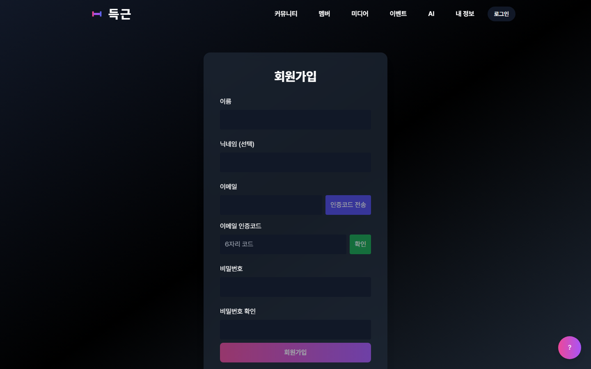
회원가입 화면은 이름, 닉네임, 이메일, 이메일 인증코드, 비밀번호, 비밀번호 확인 입력 영역으로 구성됩니다.
사용 결과:
이메일 인증이 완료된 계정이 생성되며 로그인 화면으로 이동할 수 있습니다.
주의 사항:
비밀번호는 8자 이상이어야 합니다. 이메일 인증이 완료되지 않으면 회원가입 버튼이 비활성화됩니다.
로그인
사용 목적:
가입한 계정으로 보호 기능을 사용하기 위한 세션을 시작합니다.
이동 경로:
홈 화면 → 로그인
사용 단계:
- 상단 우측 “로그인” 버튼을 누릅니다.
- Google 로그인 화면에서 자동 로그인 여부를 선택합니다.
- Google 로그인 버튼 또는 안정 모드 로그인 버튼을 통해 로그인합니다.
화면 설명:
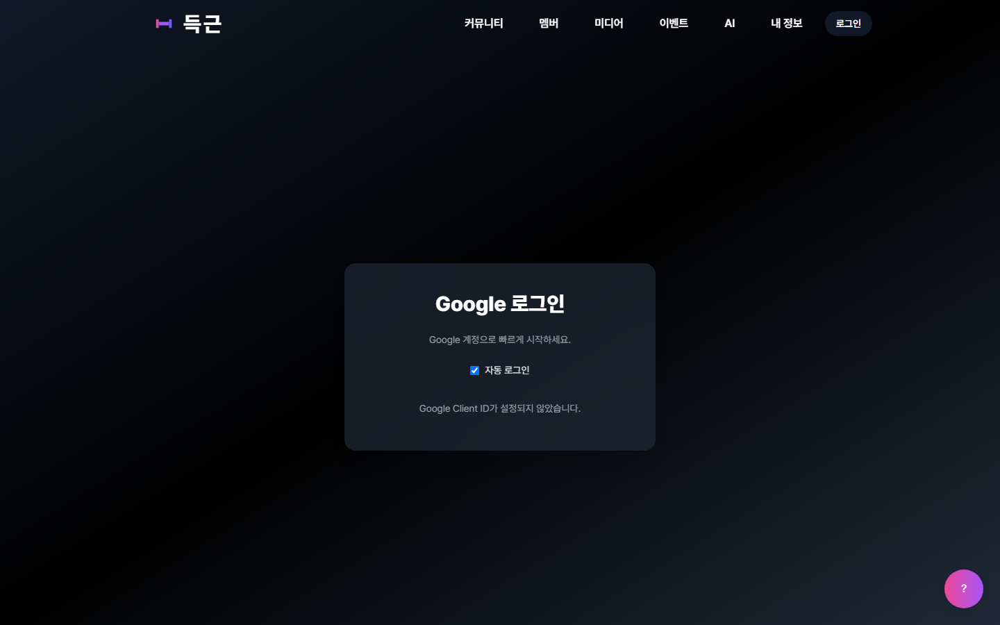
로그인 화면은 Google 로그인 중심으로 구성되어 있습니다. 로컬 개발 환경에서 Google Client ID가 설정되지 않으면 “Google Client ID가 설정되지 않았습니다.” 문구가 표시됩니다.
사용 결과:
로그인이 완료되면 상단 우측에 닉네임과 로그아웃 버튼이 표시되고 보호 화면에 접근할 수 있습니다.
주의 사항:
Google 로그인은 VITE_GOOGLE_CLIENT_ID 설정이 필요합니다. 백엔드에는 /api/auth/login API도 구현되어 있지만 현재 로그인 화면 UI는 Google 로그인 중심입니다.
출석 체크와 운동 기록
사용 목적:
오늘 운동 여부, 운동 유형, 강도, 메모, 사진/영상을 저장하고 운동 습관을 확인합니다.
이동 경로:
홈 화면 → 오늘 출석 시작 또는 상단 메뉴 → 내 정보/출석 화면
사용 단계:
- 출석 체크 화면으로 이동합니다.
- 월간 캘린더에서 기존 운동/휴식 기록을 확인합니다.
- 오늘 운동 여부를 선택합니다.
- 운동했다면 웨이트, 유산소, 스트레칭 등 운동 유형을 선택합니다.
- 운동 강도와 메모를 입력합니다.
- 필요한 경우 사진/영상 파일을 첨부합니다.
- 출석 기록 저장 버튼을 누릅니다.
- 저장 후 공유 링크 생성, 링크 복사, 공유 이미지 저장 기능을 사용할 수 있습니다.
화면 설명:
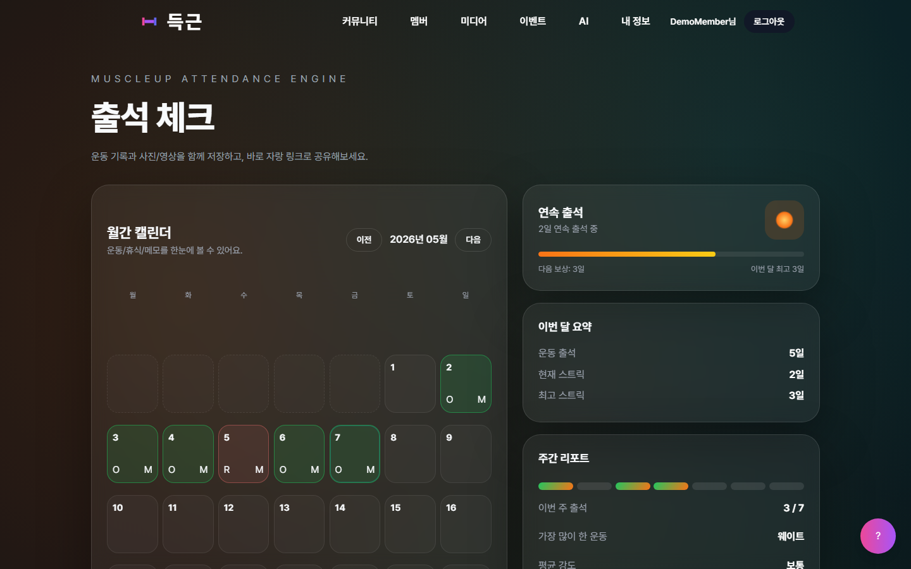
왼쪽에는 월간 캘린더, 오른쪽에는 연속 출석, 이번 달 요약, 주간 리포트, 랭킹 카드가 표시됩니다. 화면 아래에는 오늘 기록 입력 영역이 이어집니다.
사용 결과:
오늘의 운동 또는 휴식 기록이 저장되고 월간 캘린더와 요약 카드에 반영됩니다.
주의 사항:
사진/영상 첨부는 최대 10개까지 처리되도록 UI가 구성되어 있습니다. 저장 전에 로그인 세션이 만료되면 로그인 화면으로 이동할 수 있습니다.
마이페이지와 신체 스탯 관리
사용 목적:
신체 정보와 3대 운동 수치를 저장하고 캐릭터 성장 결과를 확인합니다.
이동 경로:
상단 메뉴 → 내 정보 → 마이페이지
사용 단계:
- 마이페이지로 이동합니다.
- 키, 성별, 몸무게, 골격근량, 체지방률, MBTI를 입력합니다.
- 벤치프레스, 스쿼트, 데드리프트 중량을 입력합니다.
- “저장” 버튼을 누릅니다.
- 오른쪽 캐릭터 카드에서 레벨, 티어, 진화 단계, 스킬 해금 상태를 확인합니다.
- 공개/비공개 전환, 휴식 모드, 캐릭터 다시 만들기 기능을 필요에 따라 사용합니다.
화면 설명:
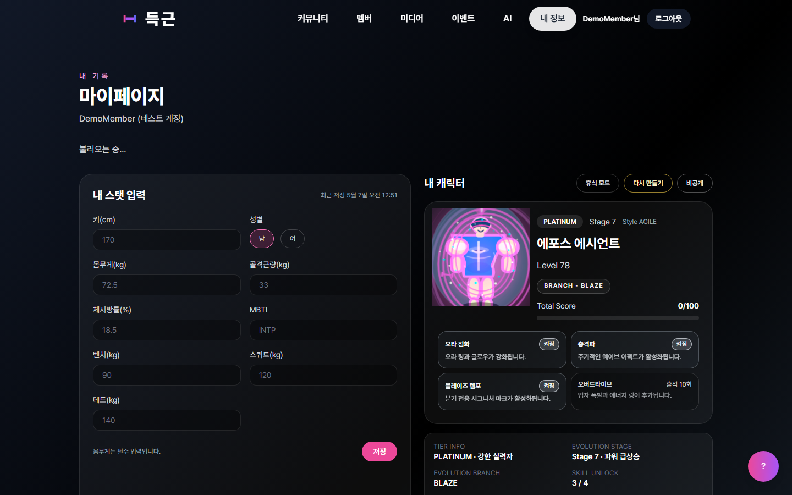
왼쪽에는 스탯 입력 폼이 있고, 오른쪽에는 캐릭터와 평가 정보가 표시됩니다. 아래에는 랭킹, 커스텀 해금, 최근 댓글, 좋아요한 글, AI 기록 영역이 이어집니다.
사용 결과:
입력한 스탯이 저장되고 캐릭터 성장 계산, 랭킹, 공개 여부, 커스텀 해금 조건에 반영됩니다.
주의 사항:
몸무게는 필수이며 20~300kg 범위로 검증됩니다. MBTI는 INTP처럼 4자 형식으로 입력해야 합니다.
랭킹 확인
사용 목적:
공개 캐릭터 기준으로 다른 사용자와 성장 수준을 비교합니다.
이동 경로:
상단 메뉴 → 내 정보 또는 직접 /rankings
사용 단계:
- 랭킹 화면으로 이동합니다.
- 캐릭터 레벨 등 랭킹 유형을 확인합니다.
- 공개 상태인 사용자의 순위와 캐릭터 정보를 봅니다.
화면 설명:
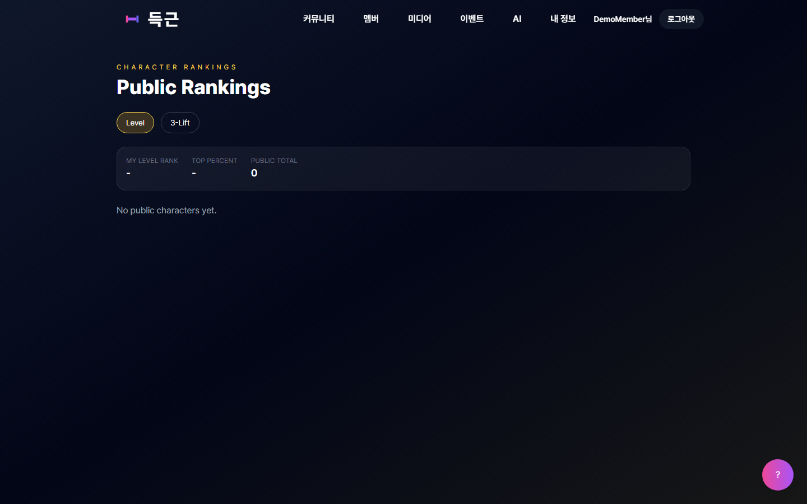
랭킹 화면은 캐릭터 성장 정보를 기준으로 회원 순위를 보여줍니다.
사용 결과:
내 캐릭터 공개 여부와 성장 수준이 랭킹 참여에 어떤 영향을 주는지 확인할 수 있습니다.
주의 사항:
마이페이지에서 캐릭터를 비공개로 설정하면 랭킹 계산에 제한이 있을 수 있습니다.
AI 플래너와 상담 사용
사용 목적:
AI로 체성 분석, 맞춤 루틴 제안, 운동/식단 상담을 받습니다.
이동 경로:
상단 메뉴 → AI → AI 플래너
사용 단계:
- AI 화면으로 이동합니다.
- “체성 분석” 탭에서 키, 체중, 체지방률, 골격근량, 목표를 입력하고 분석 결과를 요청합니다.
- “맞춤 루틴” 탭에서 주간 가능 횟수, 집중 부위, 장비, 선호 시간, 메모를 입력하고 루틴을 요청합니다.
- “AI 상담” 탭에서 질문을 입력하고 상담 결과를 확인합니다.
- 상담 기록을 새로고침하거나 공유 링크를 생성할 수 있습니다.
화면 설명:
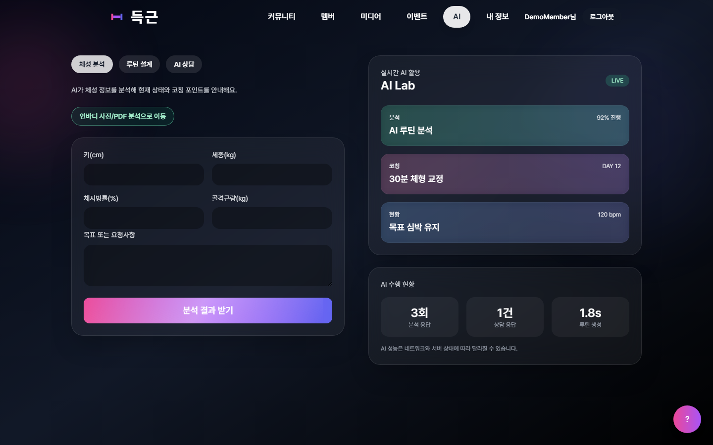
화면 왼쪽에는 AI 입력 탭과 결과 카드가 있고, 오른쪽에는 AI Lab 요약과 수행 현황이 표시됩니다.
사용 결과:
AI 분석 결과, 루틴 제안, 상담 기록이 생성됩니다.
주의 사항:
OpenAI API Key가 설정되지 않았거나 네트워크 상태가 좋지 않으면 AI 응답이 실패할 수 있습니다.
인바디 분석 사용
사용 목적:
인바디 이미지 또는 PDF 자료를 바탕으로 AI 상담을 요청합니다.
이동 경로:
상단 메뉴 → AI → 인바디 분석
사용 단계:
- 인바디 분석 화면으로 이동합니다.
- 인바디 이미지 또는 PDF를 업로드합니다.
- 분석 목적이나 상담 질문을 입력합니다.
- 분석 요청 버튼을 눌러 결과를 확인합니다.
화면 설명:
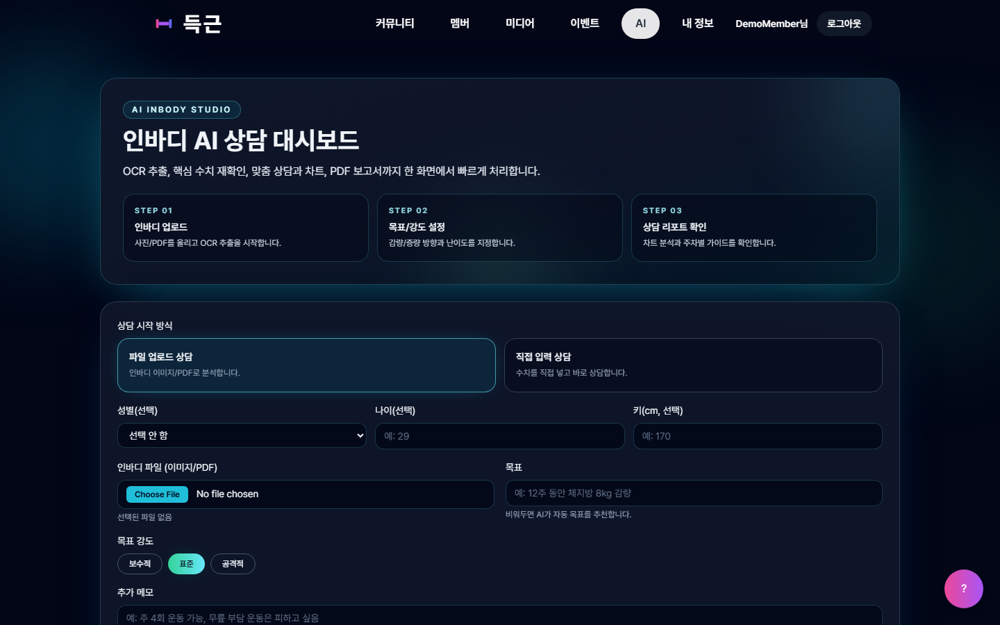
인바디 분석 화면은 파일 업로드와 상담 입력 흐름을 제공합니다.
사용 결과:
업로드한 인바디 자료와 질문을 기반으로 AI 상담 결과를 받을 수 있습니다.
주의 사항:
개인 건강 정보가 포함된 이미지를 업로드할 수 있으므로 실제 운영 환경에서는 민감정보 관리에 주의해야 합니다.
운동 자랑방 이용
사용 목적:
오늘 운동, PR 달성, 체형 변화 등 운동 성과를 게시글로 공유합니다.
이동 경로:
상단 메뉴 → 커뮤니티 → 자랑방
사용 단계:
- 자랑방 목록에서 게시글을 확인합니다.
- “빠르게 자랑 올리기”를 누릅니다.
- 제목, 운동 종목, 중량, 내용, 공개 범위, 미디어를 입력합니다.
- 저장 후 목록 또는 상세 화면에서 게시글을 확인합니다.
- 상세 화면에서는 댓글, 좋아요, 수정, 삭제 기능을 사용할 수 있습니다.
화면 설명:
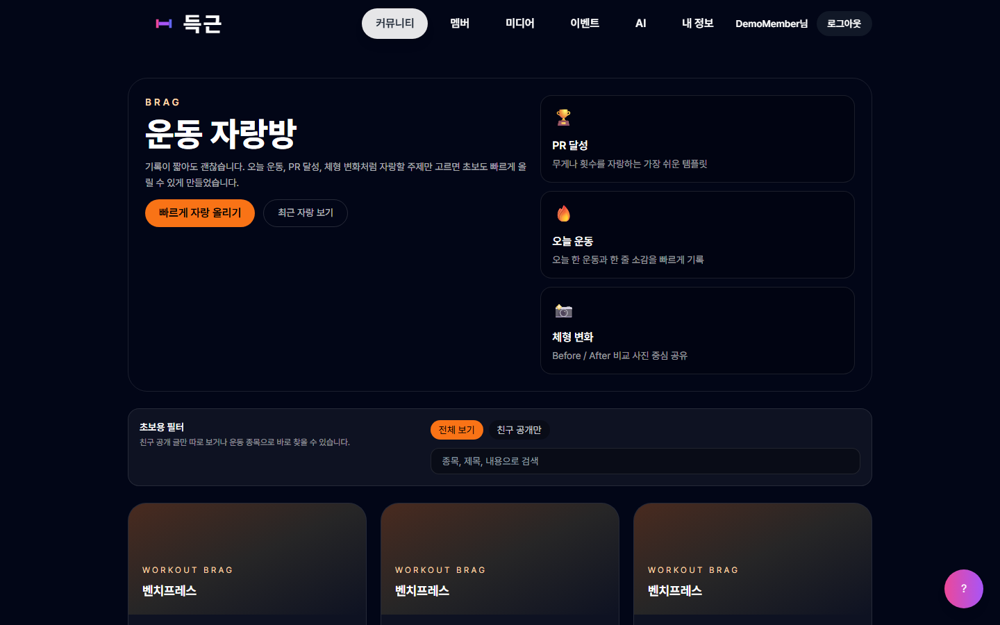
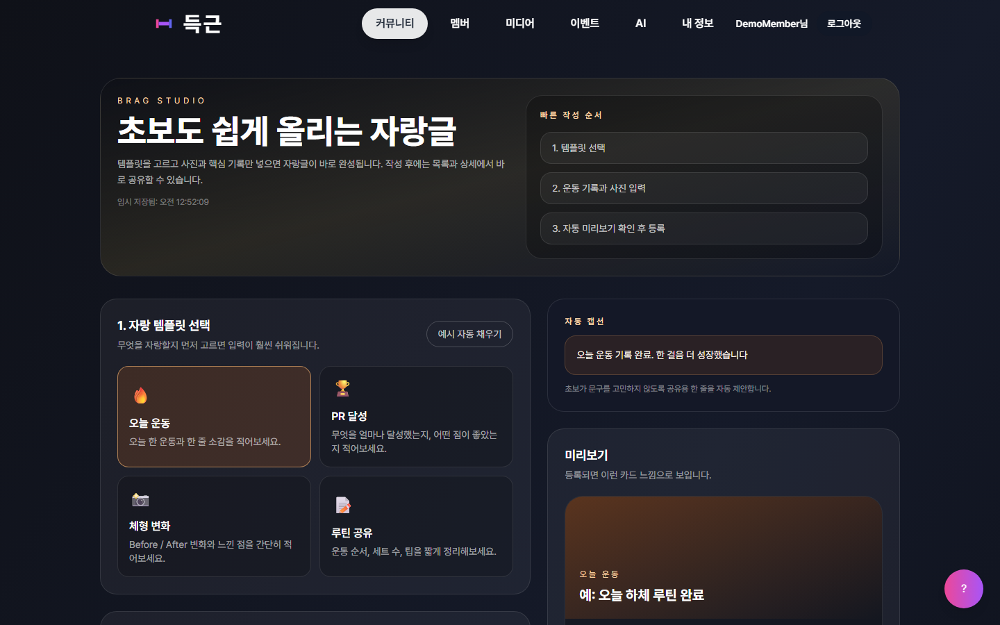
자랑방은 게시글 목록, 좋아요 수, 운동 종목, 게시글 상세 이동 버튼을 제공합니다. 글쓰기 화면은 운동 기록을 게시글 형태로 정리하는 입력 폼입니다.
사용 결과:
운동 기록이 커뮤니티 게시글로 저장되고 다른 회원과 상호작용할 수 있습니다.
주의 사항:
글 작성, 댓글, 좋아요는 로그인한 회원만 사용할 수 있습니다.
단백질 공동구매와 리뷰 이용
사용 목적:
단백질 제품 공동구매 모집을 확인하고 제품 리뷰를 공유합니다.
이동 경로:
상단 메뉴 → 커뮤니티 → 단백질 공동구매 또는 단백질 리뷰
사용 단계:
- 공동구매 화면에서 모집글 목록과 모집 상태를 확인합니다.
- 지역, 헬스장, 모집 상태 필터를 사용해 목록을 좁힙니다.
- 모집글 상세 화면으로 이동해 참여 신청과 채팅을 확인합니다.
- 필요한 경우 “공구 모집 등록”으로 새 모집글을 작성합니다.
- 리뷰 화면에서 제품별 평점과 후기를 확인하거나 작성합니다.
화면 설명:
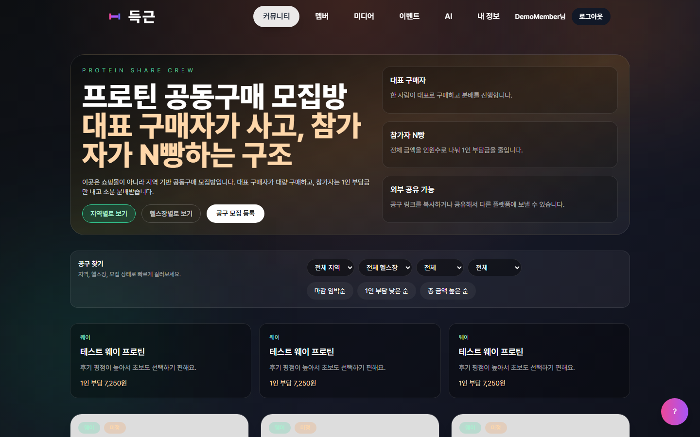
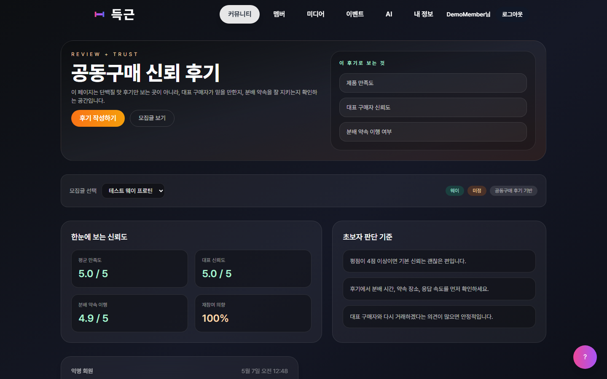
공동구매 화면은 모집 상태와 제품 정보를 카드 형태로 보여줍니다. 리뷰 화면은 제품 선택, 평점, 후기 목록 흐름을 제공합니다.
사용 결과:
회원은 공동구매 모집에 참여하거나 제품 경험을 리뷰로 공유할 수 있습니다.
주의 사항:
이 프로젝트에는 결제 기능이 구현되어 있지 않습니다. 공동구매는 모집과 신청, 참여 상태, 채팅 중심입니다.
운동 모임 이용
사용 목적:
운동 모임을 만들거나 참여하고 모임별 챌린지를 관리합니다.
이동 경로:
상단 메뉴 → 커뮤니티 → 운동 모임
사용 단계:
- 운동 모임 허브로 이동합니다.
- “새 모임 만들기”에서 모임 이름, 소개, 가입 방식을 입력하고 생성합니다.
- 초대 코드가 있으면 초대코드로 참가합니다.
- 모임 목록에서 “챌린지 보기”, “로비”로 이동합니다.
- 모임장 권한이 있으면 챌린지를 생성하거나 가입 요청을 승인/거절합니다.
화면 설명:
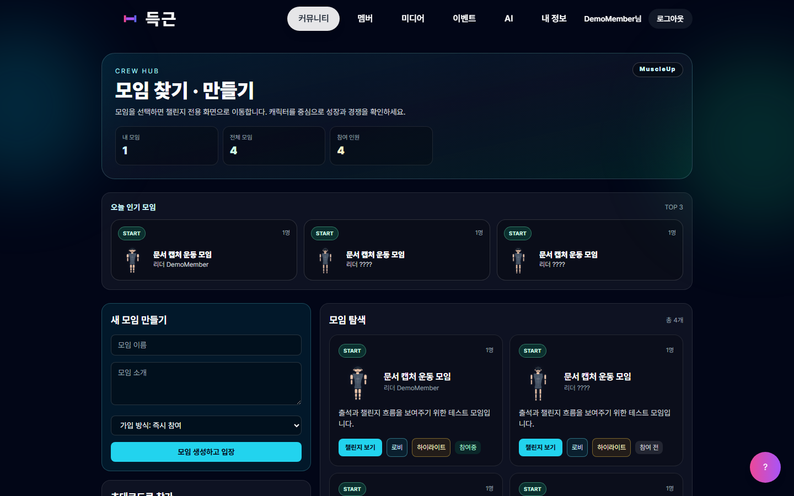
모임 화면은 인기 모임, 새 모임 만들기, 초대 코드 참가, 내가 참여 중인 모임, 모임 탐색 영역으로 구성됩니다.
사용 결과:
개인 운동 기록이 모임 단위의 출석률, 챌린지, 로비 흐름으로 확장됩니다.
주의 사항:
방장 승인 방식 모임은 가입 요청이 승인되어야 참여할 수 있습니다.
친구와 채팅 이용
사용 목적:
회원 간 친구 요청을 보내고 1:1 채팅을 사용합니다.
이동 경로:
상단 메뉴 → 커뮤니티 → 친구/채팅
사용 단계:
- 친구/채팅 화면으로 이동합니다.
- 친구의 이메일을 입력해 친구 요청을 보냅니다.
- 받은 요청과 보낸 요청 목록을 확인합니다.
- 친구 요청을 수락하면 친구 목록에 표시됩니다.
- 친구를 선택해 채팅 메시지를 주고받습니다.
화면 설명:
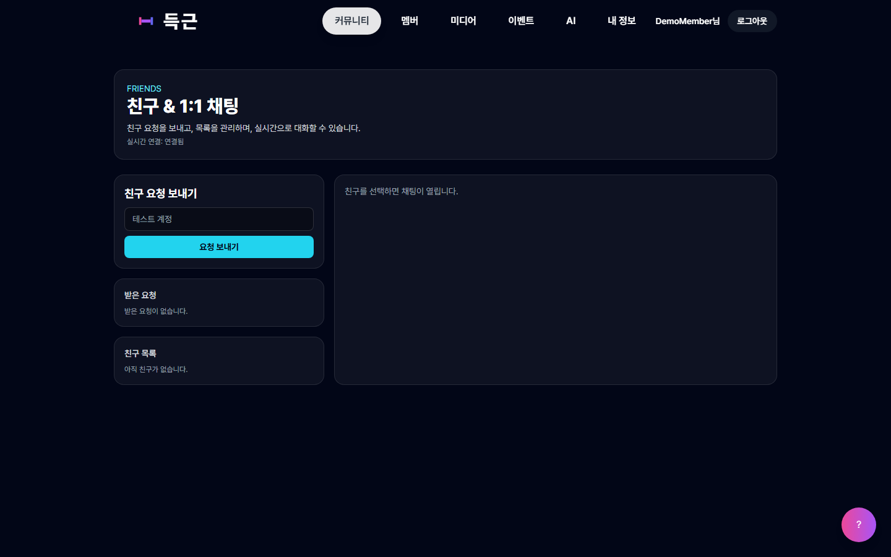
친구 화면은 요청 관리, 친구 목록, 채팅 영역을 제공합니다.
사용 결과:
친구 관계가 생성되고 친구별 채팅방에서 메시지를 관리할 수 있습니다.
주의 사항:
친구 요청은 이메일 기반으로 동작합니다. 실제 사용 시 이메일은 개인정보이므로 화면 공유나 캡처에 주의해야 합니다.
실시간 라운지 이용
사용 목적:
다른 사용자와 실시간 캐릭터 공간에서 접속하고 채팅합니다.
이동 경로:
홈 화면 → 라운지 입장 또는 /lounge
사용 단계:
- 라운지 화면으로 이동합니다.
- 캐릭터가 표시되면 방향키 또는 화면 조작으로 이동합니다.
- 채팅과 감정표현을 사용합니다.
- 접속자 상태를 확인합니다.
화면 설명:
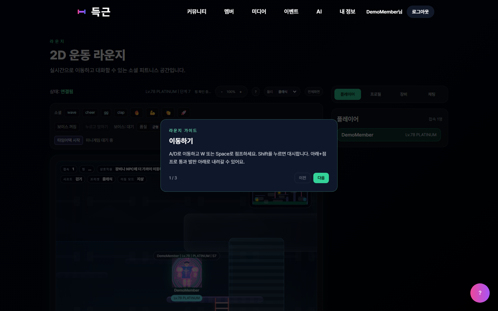
라운지는 Socket.IO 실시간 서버와 연결되어 캐릭터 위치, 채팅, 접속 상태를 동기화합니다.
사용 결과:
운동 기록 기반 캐릭터가 실시간 커뮤니티 공간에 표시됩니다.
주의 사항:
실시간 서버가 실행되지 않으면 접속자 수나 실시간 동기화가 정상 표시되지 않을 수 있습니다.
프로그램 추천과 신청
사용 목적:
운동 상태 설문을 통해 자신에게 맞는 반을 추천받고 신청합니다.
이동 경로:
상단 메뉴 → 커뮤니티 → 반 추천/신청 또는 /programs
사용 단계:
- 프로그램 화면에서 반 소개를 확인합니다.
- “설문으로 추천받기”를 누릅니다.
- 6문항 설문에 답합니다.
- 추천 반과 추천 이유를 확인합니다.
- 신청 영역에서 이름, 이메일, 목표, 반, 참여 의지를 입력해 신청합니다.
화면 설명:
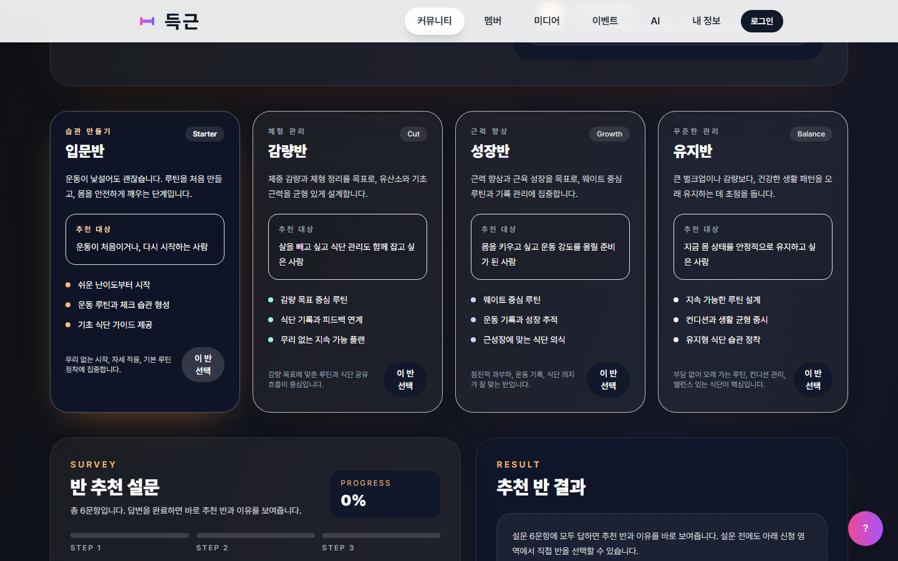
프로그램 화면은 반 소개, 설문 진행, 추천 결과, 신청 폼으로 구성됩니다.
사용 결과:
프로그램 신청 데이터가 백엔드에 저장되고 관리자는 관리자 화면에서 상태를 변경할 수 있습니다.
주의 사항:
프로그램 신청 API는 공개 접근이 허용되어 있습니다. 실제 운영 환경에서는 스팸 방지 정책이 필요할 수 있습니다.
이벤트 확인
사용 목적:
진행 중인 공개 이벤트를 확인합니다.
이동 경로:
상단 메뉴 → 이벤트
사용 단계:
- 이벤트 목록 화면으로 이동합니다.
- 진행 중인 이벤트 카드를 확인합니다.
- 이벤트 상세 화면에서 내용과 CTA를 확인합니다.
화면 설명:
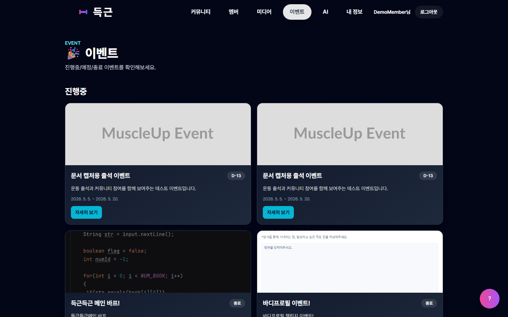
이벤트 화면은 공개 이벤트 목록을 보여주며 조회/클릭 로그 API가 구현되어 있습니다.
사용 결과:
사용자는 관리자가 등록한 이벤트를 확인할 수 있습니다.
주의 사항:
이벤트 이미지는 URL 기반으로 표시되므로 잘못된 이미지 URL이면 화면에 이미지가 표시되지 않을 수 있습니다.
5. 관리자 사용 방법
관리자 대시보드 확인
사용 목적:
서비스 운영 상태, 사용자 활동, 신청/콘텐츠/문의 현황을 확인합니다.
이동 경로:
관리자 계정 로그인 → /admin
사용 단계:
- 관리자 계정으로 로그인합니다.
/admin으로 이동합니다.- 백엔드 상태가 정상인지 확인합니다.
- 개요, 행동 추적, 검수/콘텐츠, 출석 기록, 운영 자동화 탭을 확인합니다.
- 필요하면 “이벤트 관리”, “이력 보기”, “요약 새로고침” 버튼을 사용합니다.
화면 설명:
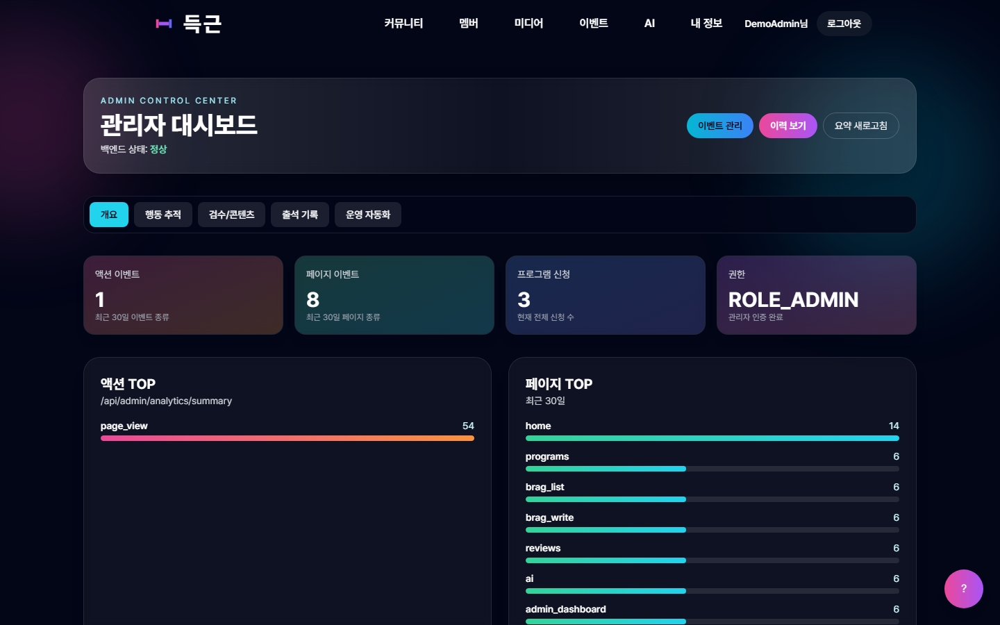
관리자 대시보드는 활동 통계, 페이지 TOP, 프로그램 신청 수, 관리자 권한, 백엔드 상태를 보여줍니다.
사용 결과:
관리자는 서비스 상태와 주요 운영 지표를 한눈에 확인할 수 있습니다.
주의 사항:
관리자 라우트는 ROLE_ADMIN 권한이 없으면 접근할 수 없고 /forbidden 화면으로 이동합니다.
프로그램 신청 관리
사용 목적:
프로그램 신청자의 상태를 검토하고 변경합니다.
이동 경로:
관리자 대시보드 → 검수/콘텐츠 또는 프로그램 신청 영역
사용 단계:
- 관리자 대시보드에서 프로그램 신청 목록을 확인합니다.
- 신청자의 목표, 선택 반, 참여 의지를 확인합니다.
- 상태를
PENDING,REVIEWING,APPROVED,REJECTED중 하나로 변경합니다. - 변경 결과가 목록에 반영되는지 확인합니다.
화면 설명:
관리자 대시보드의 프로그램 신청 카드와 테이블에서 신청 상태를 관리합니다.
사용 결과:
신청 데이터의 처리 상태가 백엔드에 저장됩니다.
주의 사항:
상태 변경은 관리자 권한이 필요합니다.
콘텐츠와 출석 공유 관리
사용 목적:
관리자가 부적절하거나 정리 대상인 콘텐츠를 관리합니다.
이동 경로:
관리자 대시보드 → 검수/콘텐츠, 출석 기록 탭
사용 단계:
- 갤러리, 단백질 공동구매, 자랑방 게시글 목록을 확인합니다.
- 삭제가 필요한 항목을 선택합니다.
- 출석 공유 목록에서 숨김 처리 여부를 변경합니다.
- 필요한 경우 수동 감사 로그를 남깁니다.
화면 설명:
관리자 대시보드의 콘텐츠 관리 탭은 콘텐츠 삭제와 출석 공유 숨김 처리를 제공합니다.
사용 결과:
관리 대상 콘텐츠가 삭제되거나 숨김 상태로 변경됩니다.
주의 사항:
삭제 작업은 되돌리기 어려우므로 운영 기준에 따라 신중하게 처리해야 합니다.
문의 처리
사용 목적:
사용자가 남긴 문의를 확인하고 처리 상태를 관리합니다.
이동 경로:
관리자 대시보드 → 문의 영역
사용 단계:
- 문의 목록을 조회합니다.
- 검색어, 상태 필터를 사용해 문의를 찾습니다.
- 상태를
OPEN,READ,IN_PROGRESS,RESOLVED로 변경합니다. - 필요한 경우 관리자 메모를 입력합니다.
화면 설명:
문의 관리는 관리자 API /api/admin/support/inquiries와 연결됩니다.
사용 결과:
문의 처리 상태와 관리자 메모가 저장됩니다.
주의 사항:
문의에는 이름, 이메일, 메시지가 포함될 수 있으므로 화면 공유 시 개인정보 노출에 주의해야 합니다.
이벤트 CMS 관리
사용 목적:
공개 이벤트를 생성, 수정, 삭제하고 메인 노출 여부를 관리합니다.
이동 경로:
관리자 계정 로그인 → /admin/events
사용 단계:
- 관리자 대시보드에서 “이벤트 관리”를 누릅니다.
- 이벤트 목록을 확인합니다.
- 새 이벤트를 만들거나 기존 이벤트를 수정합니다.
- 제목, 요약, 내용, 이미지 URL, 시작/종료 일시, 상태, 메인 배너, 고정, 우선순위, CTA, 태그를 입력합니다.
- 저장 후 공개 이벤트 화면에서 노출을 확인합니다.
화면 설명:
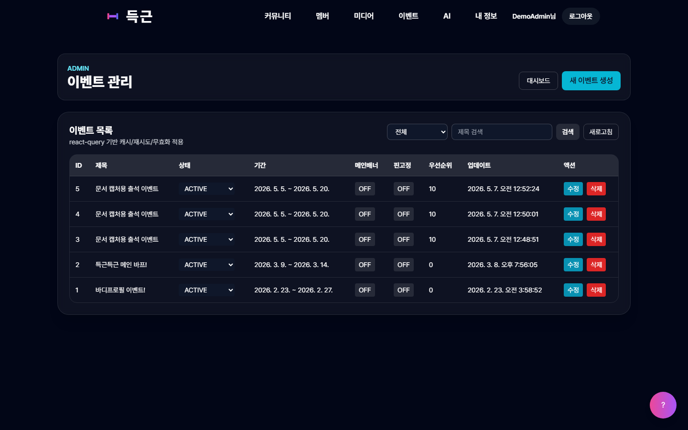
관리자 이벤트 화면은 이벤트 목록과 노출 상태를 관리합니다.
사용 결과:
공개 이벤트 화면과 홈 화면 이벤트 배너에 관리자가 등록한 이벤트가 표시됩니다.
주의 사항:
이미지 URL과 CTA 링크가 잘못되면 공개 화면에서 이벤트가 부정확하게 표시될 수 있습니다.
감사 로그와 이력 확인
사용 목적:
운영 작업과 사용자 활동 이력을 확인합니다.
이동 경로:
관리자 대시보드 → 이력 보기 또는 /admin/history
사용 단계:
- 관리자 대시보드에서 “이력 보기”를 누릅니다.
- 감사 로그 목록을 확인합니다.
- 액션, 리소스, 요약, 사용자, 생성 시각을 기준으로 운영 이력을 파악합니다.
화면 설명:
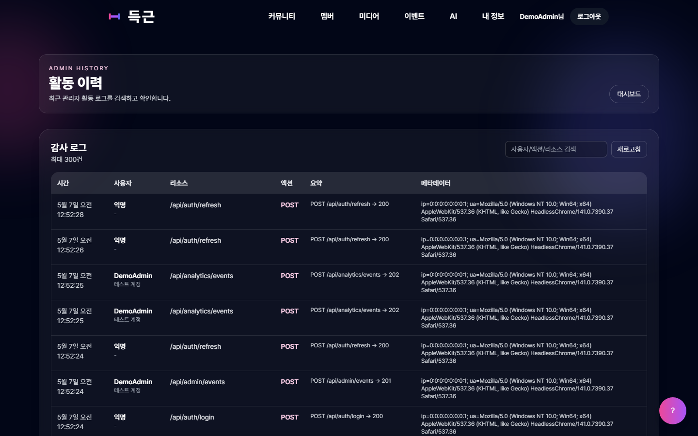
이력 화면은 관리자 감사 로그를 목록 형태로 보여줍니다.
사용 결과:
관리자는 운영 변경 내역을 추적할 수 있습니다.
주의 사항:
감사 로그에는 관리자 계정 정보가 포함될 수 있으므로 외부 공유 시 마스킹해야 합니다.
6. 자주 발생할 수 있는 상황
| 상황 | 확인할 내용 |
|---|---|
| 로그인이 되지 않을 때 | Google Client ID 설정 여부, 백엔드 8080 실행 여부, 쿠키 차단 여부를 확인합니다. |
| 회원가입이 되지 않을 때 | 이메일 인증 완료 여부, 비밀번호 8자 이상 여부, 이미 가입된 이메일인지 확인합니다. |
| 출석 기록이 저장되지 않을 때 | 로그인 세션, 백엔드 실행 상태, 필수 입력값, 네트워크 오류를 확인합니다. |
| 마이페이지가 비어 보일 때 | 로그인 후 새로고침하고, 신체 스탯을 저장했는지 확인합니다. |
| AI 응답이 실패할 때 | OpenAI API Key와 백엔드 AI 설정, 파일 업로드 형식, 네트워크 상태를 확인합니다. |
| 관리자 메뉴가 보이지 않을 때 | 계정 역할이 ROLE_ADMIN인지 확인합니다. 일반 회원은 관리자 라우트에 접근할 수 없습니다. |
| 라운지가 동작하지 않을 때 | 실시간 서버 http://localhost:4001/status 응답을 확인합니다. |
| 이벤트 이미지가 보이지 않을 때 | 이벤트 CMS에 입력한 이미지 URL이 접근 가능한지 확인합니다. |
7. 화면별 빠른 안내표
| 화면 | 접근 가능한 역할 | 할 수 있는 일 |
|---|---|---|
/ 홈 | 비회원, 회원, 관리자 | 서비스 요약, 출석/모임 이동, 이벤트 확인 |
/login 로그인 | 비회원 | Google 로그인 시작 |
/register 회원가입 | 비회원 | 이메일 인증 기반 회원가입 |
/attendance 출석 체크 | 회원, 관리자 | 운동/휴식 기록, 월간 캘린더, 공유 링크 |
/mypage 마이페이지 | 회원, 관리자 | 신체 스탯 저장, 캐릭터 성장, 공개 설정 |
/rankings 랭킹 | 회원, 관리자 | 캐릭터 랭킹 확인 |
/ai AI 플래너 | 회원, 관리자 | 체성 분석, 루틴 제안, AI 상담 |
/ai/inbody 인바디 분석 | 회원, 관리자 | 인바디 이미지/PDF 기반 AI 상담 |
/brag 운동 자랑방 | 회원, 관리자 | 게시글 목록, 좋아요, 상세 이동 |
/brag/write 자랑 글쓰기 | 회원, 관리자 | 운동 자랑 게시글 작성 |
/protein 단백질 공동구매 | 회원, 관리자 | 공동구매 목록, 모집글 등록/상세 이동 |
/reviews 단백질 리뷰 | 회원, 관리자 | 제품 리뷰 조회/작성 |
/crew 운동 모임 | 회원, 관리자 | 모임 생성, 초대 코드 참가, 모임 탐색 |
/friends 친구/채팅 | 회원, 관리자 | 친구 요청, 친구 목록, 채팅 |
/lounge 라운지 | 회원, 관리자 | 실시간 캐릭터 공간, 채팅 |
/programs 프로그램 | 비회원, 회원, 관리자 | 반 추천 설문, 프로그램 신청 |
/events 이벤트 | 비회원, 회원, 관리자 | 공개 이벤트 목록 확인 |
/admin 관리자 대시보드 | 관리자 | 운영 통계, 신청/콘텐츠/문의/출석 관리 |
/admin/events 이벤트 관리 | 관리자 | 이벤트 CMS 관리 |
/admin/history 이력 보기 | 관리자 | 감사 로그 확인 |
8. 전체 사용 흐름 요약
일반 회원:
- 회원가입 또는 Google 로그인
- 홈에서 오늘 출석 시작
- 운동/휴식 기록 저장
- 마이페이지에서 스탯 입력
- 캐릭터 성장과 랭킹 확인
- AI 분석, 인바디 분석, 자랑방, 공동구매, 리뷰, 운동 모임 사용
- 친구/채팅과 라운지로 커뮤니티 참여
관리자:
- 관리자 계정으로 로그인
- 관리자 대시보드 접속
- 통계와 백엔드 상태 확인
- 프로그램 신청, 콘텐츠, 출석 공유, 문의 처리
- 이벤트 CMS에서 공개 이벤트 관리
- 감사 로그로 운영 이력 확인